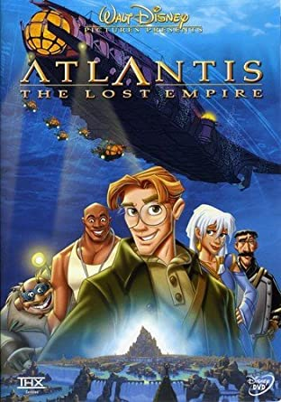

Pinocho (1940)
Es la historia de una marioneta llamada Pinocho y su padre, un anciano carpintero llamado Geppetto, al que el Hada Azul le concede el deseo de tener un hijo, dándole la vida. Pinocho anhela ser un niño de verdad, y con la ayuda de su amigo Pepito Grillo, buscará el camino del bien para lograrlo.
Fantasia (1941)
El aprendiz de brujo presenta a Mickey Mouse como un aspirante a mago que sobrepasa sus límites. El rito de la primavera cuenta la historia de la evolución, desde los animales unicelulares hasta la muerte de los dinosaurios.
.jpg)
Dumbo (1941)
Desde el dia de su nacimiento el pequeño Dumbo siempre ha sido maltratado y ridiculizado por el gran tamaño de sus orejas. Su madre, la señora Dumbo siempre ha intentado defenderle, hasta el punto de ser encerrada por enfrentarse a todo aquel que se acercara a su bebé. Ahora dumbo solo tiene el apoyo de un pequeño ratoncito llamado Timothy, que hará de él toda una estrella de circo.
Bambi (1942)
Bambi es un pequeño cervatillo recién nacido, tímido e inseguro que vive con su madre en el bosque. Poco a poco irá haciendo nuevos amigos como el conejo Tambor, la mofeta Flor y la cervatilla Faline a la vez que irá aprendiendo grandes lecciones de su madre, hasta que la pierde por culpa de los cazadores.
Saludos amigos (1943)
Es la historia de Pedro, un pequeño avión chileno que inicia su primer vuelo para recoger el correo de Mendoza y cruzar los Andes, donde se enfrentará al Aconcagua la montaña más grande de América. El gaucho Goofy. El vaquero Goofy es llevado a las pampas argentinas para aprender el estilo gaucho.

Los tres caballeros (1945)
La fiesta de cumpleaños terminará con un musical viaje a México, en el que Donald y José conocerán a Panchito Pistolas, un enérgico gallo con el que los tres se convertirán en los Tres Caballeros, tres amigos que rompen barreras para mostrar la diversidad del continente americano.

Musica maestro (1946)
Es una película animada compuesta por varios segmentos muchos de ellos enfocados hacia la propaganda debido a la Segunda Guerra Mundial. La música acompaña a todas las partes del largometraje, de una manera muy emotica y significativa.

Las aventuras de Bongo, Mickey y las judias magicas (1947)
la historia de Mickey y las habichuelas mágicas narra la historia del famoso ratón y sus amigos el Pato Donald y Goofy que, con motivo de recuperar la armonía que siempre había caracterizado a Valle Feliz, deciden enfrentarse al gigante Willie y recuperar el harpa cantora.

Tiempo de melodia (1948)
Se trata de la aventura surrealista de una abeja que trata de escapar de un frenesí musical y visual. La pieza de Freddy Martin y su orquesta, es una variación jazzística de la pieza para piano El vuelo del moscardón de Rimski-Kórsakov, una de las piezas que habían sido consideradas para incluir en Fantasia

Las aventuras de Ichabod y el Sr. Sapo (1949)
El undécimo clásico Disney fue el último de los llamados filmes-paquete, aquellos que produjo Disney durante la Segunda Guerra Mundial y los primeros años de la posguerra. La película narra dos historias míticas de la literatura británica y estadounidense. El primer relato es ‘El viento en los sauces’, escrito por Kenneth Grahame y que narra la ostentosa vida del señorito J. Thaddeus Toad, un joven multimillonario pendenciero, que derrocha su fortuna por sus obsesiones. Después por obsesionarse por los coches, el señor Sapo se verá envuelto en un crimen del que será declarado culpable, pese a ser inocente. Solo sus más fieles amigos harán lo posible por defenderlo. El segundo relato es ‘La leyenda de Sleepy Hollow’, escrito por Washington Irving. En un agradable pueblo de Sleepy Hollow, situado a las afueras del estado de Nueva York, llega el singular profesor Ichabod Crane, que se enamorará perdidamente de la bella Katrina van Tassel, convirtiéndose en el rival del chulo del pueblo, Brom Bones. La aparición del fantasma del llamado Jinete sin Cabeza durante la noche de la víspera del día de Todos los Santos convertirá la estancia de Ichabod Crane en una tortura.

Alicia en el pais de las maravillas (1951)
La historia cuenta cómo una niña llamada Alicia cae por un agujero, encontrándose en un mundo peculiar y extraño, poblado por humanos y criaturas antropomórficas.

Peter Pan (1953)
Wendy y sus hermanos vivirán fantásticas aventuras cuando Peter Pan, el héroe de sus cuentos, les guía hacia el mágico mundo de Nunca Jamás junto a su inseparable Campanilla. En su viaje a “la segunda estrella a la derecha”, conocerán la guarida secreta de Peter y a los traviesos Niños Perdidos y tendrán que enfrentarse con el famoso Capitán Garfio y sus piratas.

La dama y el vagabundo (1955)
Reina es una preciosa perrita de pura raza que vive feliz en su hogar de barrio rico. Sus dueños la miman mucho y ella corresponde feliz a sus cuidados. Sin embargo, el día que su dueña tiene un bebé, todo se complica para Reina. Llega a la casa la tía Clara con sus dos odiosos gatos siameses, Si y Aun.

101 Dálmatas (1961)
Una pareja de dálmatas, Pongo y Perdita, tienen quince hermosos cachorros después de casarse e independizarse gracias a sus dueños Anita y Roger. Pero la malvada Cruella De Vil, amiga de Anita, los quiere comprar, al no permitírselo manda a dos matones para que los secuestren.

La espada en la piedra (1963)
En la Inglaterra medieval, el rey Uther Pendragon ha muerto y la ciudad ha entrado en una era oscura. Entonces aparece una espada legendaria clavada en una piedra con el comando de que aquel que logre sacar esa espada de la piedra será proclamado rey de Inglaterra.

El libro de la Selva (1967)
Las aventuras de Mowgli, un niño humano criado por la manada de lobos de Akela, y sus mejores amigos, el oso paternal Baloo y la juguetona pantera Bagheera. Viven en la jungla india donde acechan muchos peligros, como el poderoso tigre de Bengala Shere Khan.

Los aristogatos (1970)
En París una anciana millonaria lleva una vida feliz con sus gatos en su mansión, con la única ayuda de su fiel mayordomo Edgar. Allí, Duquesa vive despreocupadamente con sus tres cachorros, sin saber que Edgar planea acabar con todos los gatos.

Robin Hood (1973)
relata la vida de un experto arquero al que sólo le interesaba proteger su vida mientras estaba al servicio del rey Ricardo Corazón de León. Al morir el rey, Robin vuelve a Nottingham, una ciudad aplastada por los impuestos recaudados por un sheriff despótico.

Lo mejor de Winnie Pooh (1977)
Christopher Robin es el único ser humano del Bosque de los Cien Acres y aunque es un niño pequeño, todas las criaturas acuden a él en busca de sus consejos y su amistad. Pero al que más quiere es a Winnie the Pooh. Ambos han corrido muchas aventuras juntos.

Bernardo y Bianca (1978)
Penny, una niña secuestrada, deja un mensaje en una botella pidiendo ayuda. Este llega a los ratones Bernardo y Bianca, miembros de la Sociedad Internacional de Rescate, quienes se aventuran a un peligroso pantano para salvarla y enfrentarse a la malvada Madame Medusa.

El zorro y el sabueso (1981)
Tod, un pequeño zorro aventurero, es abandonado por su madre poco antes de morir por el disparo de un cazador. Mamá Búho acude a su auxilio y lo lleva a casa de una anciana que decide adoptarlo. Ahí conoce al inseguro sabueso Toby.

El caldero magico (1985)
Un valeroso joven llamado Tarón debe impedir que el malvado Rey Horned se apodere del Caldero Mágico, cuya fuerza misteriosa es capaz de crear un auténtico ejército invencible de soldados sobrenaturales.

Policias y ratones (1986)
En la época del Londres victoriano, Inglaterra, un querido ratón fabricador de juguetes es secuestrado por el diabólico profesor Ratigan. Su pequeña hija, Olvia, solicita la ayuda del gran detective Basil de Baker Street, el equivalente del mundo de los roedores a Sherlock Holmes, quien se dedica a resolver crímenes en compañía de su amigo y cronista el doctor Dawson. El caso de Basil y Dawson pronto se expande cuando Basil descubre que es más importante de lo que parecía, pues parece ser que el plan final conlleva un despiadado ataque a la mismísima Corona de Inglaterra. El profesor Ratigan pretende forzar al dueño de la fábrica para construir una versión falsa de la Reina que le otorgaría un poder ilimitado entre todos los roedores de Londres. En Policías y ratones, Basil y Dawson consiguen acorralar al malvado Ratigan entre los engranajes del Big Ben, donde pretenden frustrar su plan de una vez por todas.

Oliver y su pandilla (1988)
Un gatito huérfano llamado Oliver se une a Fagin y a su banda de ladronzuelos, Dodger, un maestro moviéndose por la ciudad de Nueva York y el simpático chiguagua Tito. Un buen día, el pequeño Oliver deja las calles al ser adoptado por Jenny, una niña rica que le lleva a su casa, donde vivirá con todas las comodidades.

Bernardo y Bianca en Cangurolandia (1990)
Esta vez, nuestros ratoncitos agentes secretos se encuentran en el corazón de la indomable selva australiana cuando tienen que acudir en ayuda de Cody, un jovencito que lucha por salvar un águila de un despiadado cazador furtivo.

El rey leon (1994)
Cuenta la historia de Simba, un joven león que tras la muerte de su padre, rey de Pride Lands, es exiliado de su hogar por su tío, que usurpa el trono. Con ayuda de sus amigos y las enseñanzas de su padre, Simba es alentado tiempo después a regresar y reclamar su lugar en el reino.

El jorobado de notre dame (1996)
En lo alto de la catedral de Notre Dame, oculto de las miradas de todos los ciudadanos de París, vive Quasimodo. Su tutor, el juez Frollo, no le permite que baje del campanario. Quasimodo pasa sus días acompañado de sus tres amigas gárgolas de piedra, Victor, Hugo y Laverne, observando el bullicio de las calles de París. Un día decide salir de la catedral a escondidas y conoce a la bella gitana Esmeralda, con la que vivirá su mayor aventura.

Hercules (1997)
Hércules, hijo de Hera y el dios Zeus, es robado del Olimpo por los secuaces de Hades para llevarlo a la Tierra y despojarlo de su inmortalidad. Sin embargo, el plan no resulta como se esperaba y el niño aun conserva algunos poderes divinos. Durante su adolescencia, Hércules deberá demostrar que es digno de volver a ascender al Olimpo con los otros dioses. Con la ayuda del sátiro Filoctetes, Hércules aprenderá a usar su fuerza para luchar contra una serie de criaturas malvadas.
Tarzan (1999)
La gorila Kala encuentra un niño huérfano en la jungla y lo adopta como su propio hijo a pesar de la oposición de Kerchak, el jefe de la manada. El joven Tarzán crecerá en la jungla desarrollando los instintos de los animales y aprendiendo a deslizarse por los árboles a una gran velocidad. El joven vive como un animal hasta que una expedición se adentra en la jungla y conoce a Jane, que le hará descubrir quién es realmente y cuál es el mundo al que pertenece.

Fantasia (2000)
Al igual que su precedente, ésta película se divide en varios fragmentos -en este caso ocho- cada uno acompañado de distintas piezas musicales. Entre ellos se incluye El aprendiz de brujo, protagonizado por Mickey Mouse, que ya aparecía en la primera Fantasía.
Las locuras del emperador (2000)
El arrogante y egoísta emperador Cuzco es traicionado y convertido en llama por la ambiciosa Yzma y su guardaespaldas Kronk. El emperador, que una vez lo tuvo todo, se verá abocado a confiar en un llano y simpático campesino llamado Pacha, para encontrarse a sí mismo.

Atlantis (2001)
Milo Thatch es un especialista en lingüística y cartógrafo de museo que sueña con terminar la búsqueda que inició su abuelo ya fallecido: la del fabuloso reino de Atlantis. Es entonces cuando un excéntrico multimillonario decide financiar una expedición para resolver el misterio.
Lilo & stitch (2002)
Lilo es una niña hawaiana que se siente sola y decide adoptar un perro muy feo al que llama Stitch. Este sería la mascota perfecta si no fuera en realidad un experimento genético que ha escapado de un planeta alienígena y que ha llegado a la Tierra por casualidad.

El planeta del tesoro (2002)
En el futuro, un joven llamado Jim Hawkins, es un gran fanático de las historias del Capitán Flint, por su capacidad de robar tesoros y desaparecer sin dejar rastro. Se dice que el botín de mil mundos se encuentra en un planeta en donde la llaman: "El Planeta del Tesoro"

Tierra de osos (2003)
Cuando Kenai, un joven cazador inuit, mata a un oso sin necesidad, es mágicamente transformado en uno como castigo. Con ayuda de un osezno llamado Koda, se propone recuperar su forma humana mientras su hermano, quien ignora la verdad, le da caza en una misión de venganza.

Vacas vaqueras (2004)
Un avaricioso proscrito llamado Alameda Slim planea apoderarse de la vaquería “Patch of Heaven”, pero tres decididas vacas, un caballo karateka llamado Buck y un alegre corral lleno de criaturas unen sus fuerzas para salvar la granja en una aventura loca y frenética.

Chicken little (2005)
Es el primer filme de animación generada por ordenador de Disney. Cuenta la historia de un pollo que trata de restablecer su reputación y volver a ganarse el respeto de su padre tras haberse convertido en el hazme reír de todos después de un desafortunado incidente.

Bolt (2008)
Bolt narra la historia de un perro que, siendo la estrella canina de una exitosa serie de televisión (aunque él no lo comprenda en su totalidad, ya que piensa que todo lo que esta pasando en la serie, es real), es enviado por accidente desde su set de Hollywood hacia la Ciudad de Nueva York.
TinkerBell (2008)
Revela la historia de los primeros días de Tinker Bell en el fantástico mundo de la Tierra de las Hadas. Cada una de ellas ha nacido con un talento especial, ya sea el de hacer crecer las flores, el de darles la luz a las luciérnagas o trazar bellos dibujos en la escarcha.
Winnie the Pooh (2011)
Winnie The Pooh vivirá un sinfín de hazañas en el bosque de los Cien Arces junto con sus inseparables amigos: el simpático Piglet; el temeroso Tigger; el inocente Rabbit; los saltarines Kangú y Rito, y el entrañable burrito Ígor, que se encuentra afligido porque ha perdido su colita.

Ralph el demoledor (2012)
Cuenta la historia de Ralph, el Demoledor, un villano de un videojuego de la década 1980 y década 1990 en una de las más famosas maquinas de arcade de 8-bits llamada Repara-Félix Jr., que esta cansado de ser el antagonista malvado. Desea demostrarle a los demás que también puede hacer cosas buenas.

Grandes heroes (2014)
Hiro Hamada es un genio de la robótica de 14 años que vive en la ciudad futurista de San Fransokyo y que pasa gran parte de su tiempo libre participando en peleas ilegales de robots. Para redirigir a Hiro, su hermano mayor, Tadashi, lo lleva al laboratorio de investigación donde estudia

Zootopia (2016)
Zootrópolis es una moderna metrópoli donde viven todo tipo de mamíferos. Cerca de la ciudad vive Judy Hopps, una conejita que no se parece en nada a sus 275 hermanos ni a sus padres, los encantadores conejos Bonnie y Stu. Desde niña, Judy ha deseado ayudar a los demás y ahora cree haberlo logrado al ser la primera conejita oficial de la policía de Zootrópolis. Sin embargo, pronto descubre que trabajar en un cuerpo compuesto de animales duros y enormes no es fácil.
Wifi Ralph (2018)
Se centra principalmente en el mundo de internet y allí veremos un universo gigante y a la vez algo limitado; gigante por el gran diseño de un mundo virtual interactivo, lleno de todo tipo de personajes que representan diversos elementos de ese ambiente cibernético, tenemos el spam, las redes sociales, los buscadores, los virus, los internautas, entre otros.

Raya y el ultimo dragon (2021)
En el fantástico mundo de Kumandra, humanos y dragones vivieron juntos en perfecta armonía. Sin embargo, cuando unas fuerzas del mal amenazaron el territorio, los dragones se sacrificaron para salvar a la humanidad. Cerca de 500 años después, esas mismas fuerzas malignas han regresado y Raya, una guerrera solitaria, tendrá que encontrar al último y legendario dragón para reconstruir un mundo destruido y volver a unir a su pueblo.

Encanto (2021)
En lo alto de las montañas de Colombia hay un lugar encantado llamado Encanto. Aquí, en una casa mágica, vive la extraordinaria familia Madrigal donde todos tienen habilidades fantásticas.
Patoaventuras (1987 - 1990)
Aventuras mundiales de Rico McPato para adquirir más riquezas con sus intrépidos sobrinos. Personajes: Scrooge Mcpato, Loiie Pato, Dewey Pato, Joe McPato
Aprendiendo a vivir (1993 - 1999)
Una comedia para mayores edades que sigue a Cory Matthews mientras hace malabares con su vida en la escuela, con los amigos y el amor. Elenco: Cory: Ben Savage, Shawn: Rider Strong, Topanda: Danielle Fishel
Lizzie McGuire (2001 - 2004)
Lizzie y sus amigos se van de viaje de fin de curso a Italia. Lo que en principio parece un viaje más, se convertirá en una gran aventura.

Kim Possible (2002 - 2007)
Kim y Ron entran a la escuela secundaria y se hacen amigos de Atenea. Con la guía de Kim, Athena se transforma en el miembro más nuevo del equipo y pronto comienza a eclipsar a Kim. Cuando Drakken y Shego vuelven a aparecer en Middleton, el equipo debe detenerlos.

Es tan raven (2013 - 2007)
Una tranquila adolescente tiene la capacidad de vislumbrar eventos del futuro, y vive mil aventuras junto a sus amigos Eddie y Chelsea, mientras lidia con su hermano, Cory, obsesionado con la idea de hacerse rico. Elenco: Raven: Raven-Symoné, Chelsea: Anneliese van der Pol, Cory: Kyle Massey, Eddie: Orlando Brown, Victor: Rondell Sheridan, Tanya: T´Keyan Crystal
LazyTown (2004 - 2014)
Cuando Stephanie, una niña de 8 años, se muda a LazyTown a vivir con su tío, anima a sus nuevos amigos a salir a entretenerse, en lugar de encerrarse a jugar videojuegos. Sus esfuerzos son apoyados cuando su tío, el alcalde Meanswell, pide la ayuda de Sportacus, quien insta a los habitantes de LazyTown a mantenerse en forma y comer saludables "dulces deportivos" (también conocidos como frutas y verduras). El villano Robbie Rotten trabaja para frustrar sus esfuerzos, prefiriendo que los ciudadanos de LazyTown estén tranquilos y perezosos. Mirando la ciudad desde su guarida subterránea, Robbie puede ser en realidad la persona más ocupada en LazyTown, ya que él trabaja para infligir la pereza de sus vecinos. 4 temporadas. Personajes: Stephanie: Julianna Rose, Sportacus: Magnús Scheving, Robbie Rotten: Stefán Stefánsson, Milford, Stingy

Zack y Cody: gemelos en acción (2005 - 2008)
La vida es dulce, al menos en la suite para los gemelos Zack y Cody Martin, luego de que su madre, Carey, consigue un trabajo dirigiendo el hotel de cinco estrellas "Tipton Hotel" en Boston, incluyendo una suite en el piso de arriba. Desde ese lugar, los gemelos transforman el hotel en su parque de diversiones, aunque las bromas son usualmente instigadas por la chica obsesionada con Zack, quien no es tan maduro e intelectual que Cody; cuando su horario les permite, los chicos son "manejados" por Maddie Fitzpatrick, la adolescente dulce que de alguna forma es la mejor amiga de la hija del dueño del "Tipton Hotel". Elenco: Zack: Dylan Sprouse, Cody: Cole Sprouse, London: Brenda Song, Carey: Kim Rhodes, Marion: Phill Lewis, Maddie: Asley Tisdale, Esteban: Adrian R´Mante

La casa de Mickey Mouse (2006 - 2011)
Mickey, Minnie, Donald, Daisy, Goofy y Pluto transportan a los niños a un mundo mágico, donde aprenden a resolver problemas. Personajes: Mickey Mouse, Minnie Mouse, Goofy, Toodles, Pedro, Pato donald

Hannah Montana (2006 - 2011)
Aunque ella parece ser una adolescente común y corriente para sus compañeros de estudio y profesores, Miley Stewart tiene una vida doble, la joven se transforma en una famosa cantante de música pop, que se llama Hannah Montana, ella lo hace en la noche, para interpretar sus canciones. Su identidad secreta la conocen únicamente su familia y algunos de sus amigos y confidentes más cercanos, quienes le colaboran en todo momento para poder mantener su secreto bien guardado y así no llegar a ser descubierta. 4 temporadas. Elenco: Hannah: Miley Cyrus, Lily: Emily Osment, Jackson: Jason Earles, Oliver: Mitchel Musso, Robby: Billy Ray Cyrus, Rico: Moisés Arias
Los hechiceros de waverly place (2007 - 2012)
Alex Russo y sus hermanos Justin y Max provienen de una línea legendaria de hechiceros y ahora tienen que aprender a usar sus poderes correctamente. Su padre, Jerry renunció a sus poderes al casarse con una mujer mortal. El negocio familiar es la Subestación Waverly en la transitada Manhattan, y los tres magos jóvenes terminan en toda clase de situaciones locas mientras maduran, enfrentando retos típicos de los adolescentes como el colegio, los amigos, la familia y un reto no muy común, la magia. 4 temporadas. Elenco: Alex: Selena Gómez, Justin: David Henrie, Max: Jake T. Austin, Jerry: David DeLuise, Harper: Jennifer Stone, Theresa: Maria Canals-Barrera

Phineas y Ferb (2007 - 2015)
Phineas y Ferb dos hermanastros que quieren disfrutar de las vacaciones de verano haciendo cosas creativas cada día. Personajes: Phineas Flynn, Dr. Doofenshmirt Ferb Fletcher, Vanessa Doofenshmirt, Baljeet, Isabella Garcia

Zack y Cody: gemelos abordo (2008 - 2011)
En este programa derivado de "Zack y Cody: Gemelos en Acción", los hermanos Zack y Cody Martin hacen amigos nuevos y se meten en travesuras distintas, luego de mudarse a su nuevo hogar a bordo de la embarcación "S.S Tipton". 3 temporadas. Elenco: Zack: Dylan Sprouse, Cody: Cole Sprouse, London: Brenda Song, Marion: Phill Lewis, Maddie: Asley Tisdale, Maya: Zoey Deutch

Jonas (2009 - 2010)
Nick, Joe y Kevin son los tres hermanos más famosos del momento, que juntos forman una banda de pop llamada Jonas. Sus padres, Tom y Sandy Lucas, siempre han intentado que sus hijos sean adolescentes normales, y lo han conseguido, pero solo a veces. Elenco: Nick: Nock Jonas, Joe: Joe Jonas, Kevin: Kevin Jonas, Stella: Chelsea Kane, Frankie: Frankie Jonas, Macy: Nicole Anderson
A todo ritmo (2010 - 2013)
Las mejores amigas CeCe y Rocky, sueñan con ser unas estrellas de baile aclamadas y parece que ellas están a punto de realizar ese objetivo al ganar dos lugares como bailarinas de fundo, para un programa de TV local "Shake It Up, Chicago". Mientras ellos tienen la oportunidad de mostrar sus mejores pasos y movimientos, ellas se dan cuenta que necesitan dar lo mejor de sí mismas y mostrar sus mejores movimientos para mantenerse a la par con el resto de grupo de bailarines quienes son extremadamente buenos. 3 temporadas. Elenco: Rocky: Zendaya, CeCe: Bella Thorne, Deuce: Adam Irigoyen, Ty: Roshon Fegan, Flynn: Davis Cleveland

Par de reyes (2010 - 2013)
Los mellizos Brady y Boomer son adolescentes promedio, hasta que un día un representante del país de Kinkow llega a su escuela secundaria en Chicago para informarles de que son los herederos al trono de la isla. Los chicos se trasladan a reclamar su herencia, pero no es tan fácil como parece. La isla es el hogar de una serie de supersticiones y costumbres extrañas, que chocan con su educación americana, además de tener un primo que les hará pasar malos ratos, ya que quiere el trono para él. Elenco: Rey Brady: Mitchel Musso, Duke Parker: Doc Shaw, Mikayla: Kelsey Chow, Lanny: Ryan Ochoa, Boz: Adam Hicks, Mason: Geno Segers

¡Buena suerte charlie! (2010 - 2014)
Los Duncan planean unas vacaciones a Palm Springs para visitar a la familia por las fiestas navideñas. El viaje dará un giro inesperado cuando Amy y su hija mayor se quedan atrapadas en el aeropuerto.

Programa de talentos (2011 - 2014)
Algunos pueden describir al "Programa de Talentos" como el programa "Glee" para los televidentes de Disney. Este programa incluye a una joven artista prodigiosa, Chyna Parks que va a la secundaria como parte de un programa Avanzado de Talentos innatos (A.N.T). Chyna y sus compañeros participantes del A.N.T, Olive y Fletcher tienen que aprovechar su experiencia en el bachillerato, a pesar de la bienvenida poco entusiasta por parte de sus compañeros estudiantes, que incluye al hermano mayor de Chyna, Cameron. 3 temporadas. Elenco: Chyna: China Anne McClain, Fletcher: Jake Short, Olive: Sierra McCormick, Lexi: Stefanie Scott, Cameron: Carlon Jeffery, Angus: Aedin Mincks

Jessie (2011 - 2015)
"Jessie" es la historia típica de alguien que no encaja en un lugar. Jessie es una adolescente que deja sus raíces en Texas y toma un trabajo como niñera para la familia Ross, que está conformada por cuatro preciosos hijos en la ciudad de Nueva York y los padres de la familia son Christina, una super modelo que tiene su propio imperio de negocios y el director de películas Morgan. El mayor de los cuatro niños es la adolescente Emma y es la única hija biológica del grupo. Sus tres hermanos son adoptados, Luke quien es estadounidense, Ravi quien es de la India y Zuri quien es africana. Es un desafío para una adolescente cuidar a cuatro niños pero Jessie tiene la ayuda del mayordomo de la familia, Bertram y el portero del edificio que tiene 20 años, Tony. También Jessie tiene como reto el cuidar de la mascota de la familia, un varano acuático asiático de 7 pies. 4 temporadas. Elenco: Jessie: Debby Ryan, Emma: Peyton List, Zuri: Skai Jackson, Luke: Cameron Boyce (RIP), Ravi: Karan Brar

Los Guerreros Wasabi (2011 - 2015)
Dirigido por el Sensei Rudy, la Academia de Artes Marciales Bobby Wasabi es el peor dojo en la cadena nacional Bobby Wasabi y está en peligro de cierre. Pero las cosas cambian cuando Jack se une de mala gana al dojo y se encuentra con su nuevo equipo, incluyendo el tipo duro Jerry y la segura experta en artes marciales Kim. El equipo enseña a un grupo de chicos de barrio sobre la vida, el karate y cómo "patearla." Jack y sus amigos se dan cuenta rápidamente que su nueva amistad los llevará a lugares que nunca han imaginado y, unidos, pueden llegar a ser imparables. 4 temporadas. Elenco: Jack: Leo Howard, Milton: Dylan Riley Snyder, Jerry: Mateo Arias, Kim: Olivia Holt, Sensei Rudy: Jason Earles, Eddie: Alex Jones

Austin y Ally (2011 - 2016)
Ambientada en Miami, Austin & Ally trata sobre la relación entre dos músicos muy diferentes: el cantante e instrumentalista Austin Moon, extrovertido y amante de la diversión, y la introvertida y torpe compositora Ally Dawson, quien también es cantante, pero tiene un mal caso de pánico escénico, y sus dos mejores amigos trish y dez. 4 temporadas. Elenco: Austin: Ross Lynch, Ally: Laura Marano, Dez: Calum Worthy, Trish: Raini Rodriguez

Violetta (2012 - 2015)
La telenovela se centra en Violetta (Tini Stoessel), una adolescente que regresa a Buenos Aires, su hogar natal, después de vivir varios años en Madrid. En Madrid descubre su pasión por la música y, para defenderla, vive una serie de enredos para evadir a su padre. El padre cegado por el dolor del fallecimiento de su esposa y madre de Violetta en un accidente automovilístico durante una gira musical, busca alejarla de todo lo relacionado con la música, creyendo que protege a su hija. 3 temporadas. Elenco: Violetta: Tini Stoessel, León: Jorge Blanco, Diego: Diego Dominguez, Federico: Ruggero Pasquarelli, Francesca: Lodovica Comello, Ludmila: Mercedes Lambre, Angie: Clara Alonso

Lab Rats (2012 - 2016)
Leo es un adolescente común y corriente que se a mudado a una casa "inteligente" con tecnología avanzada, junto a su madre, su padrastro que es un inventor y Eddy, el computador que maneja la casa. La vida de Leo deja de ser normal cuando un día el descubre un laboratorio secreto subterráneo que alberga a tres jóvenes adolescentes con superpoderes, Adam, el fuerte; Bree, la rápida y Chase, el inteligente, que convence a Leo y a sus padres de que los dejen salir del laboratorio y asistir al colegio con Leo, ellos tratan de encajar con los estudiantes e intentan controlar sus habilidades biónicas que son impredecibles; mientras Leo trata de mantener en secreto las habilidades de los chicos, ellos lo ayudan a que el se sienta más seguro de sí mismo. 4 temporadas. Elenco: Chase: William Brent, Bree: Kelli Berglund, Adam: Spencer Boldman, Leo: Tyrel Jackson, Douglas: Jeremy Kent

Gravity Falls (2012 - 2016)
El tío Stan invita a los gemelos Dipper y Mabel Pines a pasar el verano en el misterioso pueblo de Gravity Falls, Oregón. Los niños lo ayudan en la Cabaña del Misterio, la trampa turística que posee. Los gemelos tratan de adaptarse al entorno diferente, pero sienten que hay algo extraño en Gravity Falls y comienzan a descubrir sus secretos. Cuando Dipper descubre un diario críptico que ofrece el conocimiento de los misterios de la ciudad, él y Mabel lo usan para vencer al mal, y luchan para descubrir los inminentes misterios que los rodean. 2 temporadas. Personajes: Dipper, Mabel, Wendy, Stanley, Robbie, Guideon, Pato, Stanford

Mega Med (2013 - 2015)
Dos mejores amigos adolescentes, Kaz y Oliver, consiguen empleos después de la escuela en un hospital secreto para superhéroes, personajes de ciencia ficción y fantasía; allí descubren que sus personajes favoritos son reales y viven entre ellos. 2 temporadas. Elenco: Kaz: Bradley Steven Perry, Oliver: Jake Short, Skylar: Paris Berelc, Alan: Devan Leos

Liv y Maddie (2013 - 2017)
Liv y Maddie Rooney son gemelas idénticas que tomaron diferentes rumbos en los últimos años. Maddie es un fenómeno del baloncesto en la preparatoria de Wisconsin. Fresca y súper social, Liv ha estado en Hollywood durante los últimos cuatro años protagonizando un programa de televisión. Cuando Liv regresa a casa, y las chicas comparten su dormitorio, Maddie se da cuenta rápidamente de que no es fácil compartir un pequeño espacio con una hermana que se ha acostumbrado a ser el centro de atención; Liv se invita a sí misma en situaciones en las que piensa que Maddie necesita ayuda. A pesar de sus opuestas personalidades y aspiraciones, las chicas son capaces de lograr cualquier cosa que quieran. 4 temporadas. Elenco: Liv y Maddie: Dove Cameron, Joey: Joey Bragg, Parker: Tenzing Norgay, Pete: Benjamin King, Diggie: Ryan McCartan, Karen: Kali Rocha

Yo no lo hice (2014 - 2017)
Yo no lo hice es una serie de Disney Channel protagonizada por Olivia Holt. En la serie, los mellizos fraternales y ultra-competitivos Lindy y Logan Watson, junto con sus tres mejores amigos pasan su primer año de escuela secundaria. Cada episodio comienza con la situación cómica de "¿qué ha pasado?". Elenco: Lindy: Olivia Holt, Logan: Austin North, Jasmine: piper Curda, Delia: Sarah Gilman, Garrett: Peyton Clark

Las crónicas de Evermoor (2014 - 2017)
Cuándo Tara Crossley, una adolescente y brillante escritora se traslada desde los Estados Unidos para iniciar una nueva vida en el espeluznante pueblo inglés de Evermoor, descubre un tapiz mágico que parece tener poderes para predecir el futuro y el círculo de las Everines. Allí, Tara descubrirá que también posee el poder para bordar y predecir el futuro en el tapiz y que ella es la Suprema Everine. 2 temporadas. Elenco: Tara: Naomi Sequeira, Bella: Georgia Lock, Cameron: Finney Cassidy, Srosha: Jordan Loughran, Seb: George Sear, Ludo: Alex Starke
Girl Meets World (2014 - 2017)
La serie sigue a la hija de Cory y Topanga Matthews, llamada Riley (Rowan Blanchard) junto con su mejor amiga, Maya Hart (Sabrina Carpenter), y los desafíos de la vida que atraviesan a medida que empiezan séptimo grado con Cory como su profesor. El espectáculo también cuenta con sus amigos Lucas Friar (Peyton Meyer) y Farkle Minkus (Corey Fogelmanis), y el hermano menor de Riley, Auggie (August Maturo). La serie está ambientada en la ciudad de Nueva York, donde Cory y Topanga se trasladan al final de la serie Boy Meets World. 3 temporadas. Elenco: Riley: Rowan Blanchard, Maya: Sabrina Carpenter, Cory: Ben Savage, Topanga: Danielle Fishel, Lucas: Peyton Mayer, Farkle: Corey Fogelmanis
Kirby Buckets (2014 - 2017)
Kirby sueña en convertirse en un famoso diseñador de animación como su gran ídolo, Mac McCallister, y junto con sus dos amigos, Fish y Eli, vive aventuras en su ciudad excéntrica, Forest Hills. 3 temporadas. Elenco: Kirby: Jacob Bertrand, Fish: Mekai Curtis, Belinda: Tiffany Espensen, Eli: Cade Sutton, Dawn: olivia Stuck
Agente K.C. (2015 - 2018)
La serie sigue a K.C, una estudiante de secundaria genio de las matemáticas que se ve reclutada por sus padres espías después que descubre que en realidad son espías encubiertos. Cada episodio se centra en la familia: desde lidiar con problemas familiares cotidianos hasta desempeñar misiones para salvar su país, o incluso todo el mundo. 3 temporadas Elenco: K.C: Zendaya, Marisa: Veronica Clark, Judy: Trinitee Stokes, Ernie: Kamil McFadden, Kira: Tammy Townsend, Craig: Kadeem Hardison
Star vs. las fuerzas del mal (2015 - 2019)
Después de luchar contra muchos monstruos peligrosos, Star Butterfly viene a la Tierra para vivir con una familia. Y deberá enfrentar a mas monstruos junto con su mejor amigo Marco Díaz. 4 temporadas. Personajes: Star Butterfly, Marco Díaz, Tom, Jackie, Eclipsa, Janna

Miraculous: Las aventuras de Ladybug (desde 2015 - en progreso)
Dos adolescentes parisinos, Marinette Dupain-Cheng y Adrien Agreste, se transforman en los superhéroes Ladybug y Cat Noir, para proteger la ciudad de los supervillanos. 4 temporadas. Personajes: Marinette Dupai-Cheng, Adrien Agreste, Luka, Hawk Moth, Alya, Chloé, Nino, tikki, plaga
Acampados (desde 2015)
Luego de que su niñera Jessie Prescott se vaya a Hollywood, los hermanos Ross: Emma (Peyton List), Ravi (Karan Brar) y Zuri (Skai Jackson), deciden pasar el verano en el campamento Kikiwaka, donde sus padres, Christina y Morgan, se conocieron como adolescentes. Ahí conocen a Lou, líder de una agrupación llamado "Las Marmotas"; Xander, un guitarrista e interés amoroso de Emma; Jorge, un chico un poco problemático que busca hacer amigos; y Tiffany, una campista de origen chino. Ellos hacen todo lo posible para adaptarse a sus vidas en el campamento, que fue fundado por "Jedediah Swearengen" y lleva el nombre de una legendaria criatura parecida a "Pie Grande" que vive en el bosque cercano. 5 temporadas. Elenco: Xander: Kevin Quinn, Emma: Peyton List, Ravi: Karan Brar, Zuri: Skai Jaclson, Lou: Miranda May
Lab Rats: Fuerza Elite (2016)
Los personajes de "Lab Rats" y "Mighty Med" se unen para hacer de este mundo un lugar seguro, combatiendo a supervillanos. Elenco: Chase: William Brent, Kaz: Bradley Steven Perry, Oliver: Jake Short, Skylar: Paris Berelc, Bree: Kelli Berglund

The Lodge: Música y secretos (2016 - 2017)
Skylar "'Skye"' (Sophie Simnett) es una chica de 15 años que se muda con su padre Ed (Marcus Garvey) desde la gran ciudad hasta una zona rural de Irlanda del Norte, donde se hacen cargo de un hotel local llamado North Star Lodge, que anteriormente era poseído y dirigido por el abuelo de Skye: Gil (Dan Richardson). En su nuevo hogar, Skye intenta construir una vida, pero esta nueva vida está lejos de ser libre de complicaciones ya que debe navegar a través de las tensiones cotidianas de la vida de ser adolescente. Ella lucha para integrarse en un grupo de adolescentes que viven y trabajan en el hotel, pero descubre que la mayoría de ellos no tienen buenas intenciones. Cuando descubre que su padre planea vender el hotel, Skye se molesta porque ha desarrollado un vínculo emocional con él. Skye decide convencer a su padre de no vender el hotel solo para descubrir que el hombre que quiere comprarlo es el padre de su nuevo amigo e interés amoroso. Skye recibe el apoyo de sus amigos, pero no todos están tan interesados como ella en mantenerlo. Skye descubre secretos con el tiempo que afectarán no solo su vida, sino también la del hotel. 2 temporadas. Elenco: Sean: Kaylee: Jade Alleyne,Thomas Doherty, Skye: Shopie Simnett, Ben: Luke Newton, Jess: Dove Cameron

Atrapada en el medio (2016 - 2018)
Cuenta la historia de la familia Díaz, pero se centra más en la vida de Harley Díaz, la hija del medio de una familia de 7 hijos, donde, aunque no notaron su posición, se abre paso utilizando sus habilidades como una prodigio de la ingeniería, aunque a lo largo del camino se encontró con el problema de estar en una gran familia. 3 temporadas. Elenco: Harley: Jenna Ortega, Ethan: Isaak Presley, Rachel: Ronni Hawk, Daphne: Ariana Greenblatt, Beast: Malachi Barton, Georgie: Kayla Maisonet, Lewie: Nicolas Bechtel, Aidan Peters:Joshua Bassett

Soy Luna (2016 - 2018)
Luna Valente (Karol Sevilla) es una estudiante adolescente mexicana quien lleva una vida tranquila y feliz patinando en sus tiempos libres a orillas del mar de su querida ciudad, mientras escucha las canciones que le compone su mejor amigo Simón (Michael Ronda). De pronto, su vida da un giro inesperado cuando sus padres reciben una propuesta de trabajo imposible de rechazar, por lo que aceptan y se mudan a Argentina. Luna deberá adaptarse a una nueva vida, nuevos amigos y un colegio de elite, encontrándose con un mundo de lujos muy diferente a ella. Sin embargo, pronto descubre un club de patinaje, el Jam & Roller, donde no solo pone a prueba su destreza con los patines, sino también su talento en el canto sobre el escenario. Durante esta nueva etapa en su vida, reflorece en ella su pasión por el patinaje y el baile, encontrando en el camino nuevos amigos, y también el amor, enamorándose de alguien completamente diferente a ella, Matteo Balsano (Ruggero Pasquarelli), mientras Ámbar Smith (Valentina Zenere), la estudiante más popular en la escuela y novia de Matteo, le hace la vida imposible. 3 temporadas. Elenco: Luna: Karol Sevilla, Mateo: Ruggero Pasquarelli, Simón: Michael Ronda, Ámbar: Valentina Zenere

Bizaardvark (2016 - 2019)
Frankie y Paige son dos mejores amigas adolescentes que publican canciones divertidas y videos cómicos en Internet. Después de tener 10.000 suscriptores en su canal de Vuuugle Bizaardvark (un portmanteau de las palabras "bizarro" y "aardvark"), son aceptadas en los estudios de Vuuugle, donde hacen sus videos mientras que también tienen que compartirlos con otros "Vuuuglers". 3 temporadas. Elenco: Paige: Olivia Rodrigo, Frankie: Madison Hu, Bernard Shotz: Ethan Wacker, Amelia: DeVore Ledridge, Dirk: Jake Paul
Andi Mack (2017 - 2019)
Andi Mack (Peyton Elizabeth Lee) tiene 13 años cuando su hermana mayor Bex (Lilan Bowden) regresa a casa. Pero las cosas se ponen de cabeza cuando se descubre que Bex es en realidad la mamá de Andi, causando tensión entre ellas y su madre, Celia Mack (Lauren Tom). Además Andi debe conllevar su enamoramiento por Jonah Beck (Asher Angel) y soportar los conflictos con su novia Amber (Emily Skinner). Con ayuda de sus amigos Cyrus (Joshua Rush) y Buffy (Sofia Wylie) pondrá frente a los problemas de su vida. 3 temporadas. Elenco: Andi Mack: Peyton Elizabeh Lee, Jonah Beck: Asher Angel, Cyrus: Joshua Rush, TJ: Luke Mullen, Buffy: Sofia Wylie

O11CE (2017 - 2019)
Gabo es un adolescente que vive en un pueblo remoto y tiene la oportunidad de su vida, viajar a Buenos Aires a jugar en los Halcones Dorados, un reconocido equipo aficionado. Gabo buscará cumplir su gran sueño y convertirse en un futbolista profesional. 3 temporadas. Elenco: Lorenzo: Sebastián Athié (RIP), Gabriel”Gabo”: Mariano González, Zoe: Paulina Vetrano, André: Luan Brum
Juacas (2017 - 2019)
Después de haber estado ausente varios años, el equipo Juacas regresa a Caoss (el Campeonato Anual de Olas Súper Surf). Sin patrocinadores que los apoyen, todo lo que consiguen con perseverancia y fe. 2 temporadas. Elenco: Rafa: André Lamoglia, Brida: Isabela Souza, Billy: Bruno Astuti, Leilane: Larissa Murai
La casa de raven (desde 2017 – en progreso)
Las mejores amigas Raven y Chelsea, ambas madres divorciadas, ahora están criando a sus hijos en un apartamento juntas en Chicago. Las cosas dan un giro cuando se dan cuenta de que uno de los hijos de Raven tiene las mismas capacidades psíquicas que su madre que es predecir el futuro. 5 temporadas. Elenco: Raven Baxter: Raven Symoné, Nia: Navia Robinson, Booker: Issac Ryan Brown, Chelsea: Anneliese van del Pol, Tess: Sky Katz, Levi: Jason Maybaum

Los vecinos green (desde 2018)
La serie se centra en Grillo Green, un chico de campo travieso pero optimista que se muda a la gran ciudad campo junto con su familia, entre ellos se encuentran Tilly Green, que es la hermana mayor del protagonista, en la mayoría de los episodios se ve como una niña pasiva y muy tranquila. Bill Green, padre de Grillo Green, un hombre que vive con sus hijos y madre en una casa en el centro de la ciudad. Se muestra muy protector y reflexivo y trata de cuidar sus hijos lo más que pueda. Alice Green es la abuela de Tilly, Grillo y la madre de Bill Green, que es una persona irritable, impulsiva y un poco antisocial, vive con sus nietos e hijo en su granja. La madre de los niños se llama Nancy Green y es motociclista. Personajes: Grillo Green, Tilly Green, Bill Green, Alice Green, Remy Remington

Holly Hobbie (desde 2018)
Holly Hobbie puede parecer una joven granjera que vive en un pequeño pueblo llamado Collinsville. Pero por dentro es una heroína para nuestro tiempo. Ahora que Holly ha llegado a la adolescencia, ayudar a los demás es más complicado de lo que parece. Desde salvar el café de su abuela, hasta apoyar a su mejor amiga y navegar por el amor joven, Holly puede salvar al mundo algún día, pero comenzará con su pequeño pueblo. 3 temporadas, pero esta renovado para una cuarta y quinta temporada que todavía no están en grabación. Elenco: Holly Hobbie: Ruby Jay, Tyler Flaherty: Hunter Dillon, Amy: Saara Chaundry, Robbie Hobbie: Charles Vandervaart, Piper: Kamaia Fairburn

Coop y Cami (2018 - 2020)
Cooper y Cameron Wrather son dos hermanos que van juntos a la escuela secundaria, ellos toman casi todas sus decisiones, tanto frívolas como locas, a través de las opiniones de los millones de seguidores del canal en línea de Cooper. 2 temporadas. Elenco: Cooper: Dakota Lotus, Cami: Ruby Rose Turner, Charlotte: Olivia Sanabia, Ollie: Paxton Booth, Fred: Albert Tsai, Jenna: Rebecca Metz

Encuéntrame en París (2018 - 2020)
Helena 'Lena' Grisky, una princesa rusa de 1905 se está entrenando para ser bailarina en la Opéra de Paris y es la mejor estudiante de la escuela. Su novio, Henri, no sabe que su familia viaja en el tiempo, y descubre un reloj oculto por su padre, que le da a Lena como regalo, pensando que es solo una joya. Lena es transportada y atrapada en el año 2018, dejando a Henri luchando por encontrar una manera de traerla de vuelta y luchar contra los coleccionistas del tiempo, que se dispusieron a capturar a Lena. Mientras tanto, en 2018, Lena debe continuar asistiendo a la escuela de ballet en la Opéra de Paris moderna para mantener su identidad en secreto y permanecer en París hasta que pueda regresar a 1905. Sin embargo, a pesar de querer regresar a 1905, Lena pronto se instala en ella. nuevo período de tiempo y hace nuevos amigos en algunos de los otros estudiantes de la escuela: Jeff, Dash e Ines, siendo esta última quien se convierte en su mejor amiga y la primera en descubrir su secreto. Sin embargo, también encuentra un rival en la despiadada Thea, que ve a Lena como una amenaza a su ambición de ser la mejor bailarina de la escuela. Para complicar aún más las cosas, aunque Lena no ha olvidado a Henri, termina enamorándose de Max, quien se convierte en su compañero de baile. También encuentra el amor por un nuevo género de baile, hip-hop, cuando se une al grupo de baile de Max llamado BLOK. Con todos estos conflictos, Lena se queda con un dilema: Regresar a 1905 o quedarse en el futuro. 3 temporadas. Elenco: Léna Grisky: Jessica Lord, Max Alvarez: Rory J. Saper, Jeff Chase: Castle Rock, Thea Raphael: Hannah Dodd, Ines: Eubha Akilade, Frank: Seán Óg Cairns, Henri Duquet: Christy O´Donnell

Sydney como Max (2019 - 2021)
Sydney to the Max es una comedia que gira en torno a Sydney Reynolds, una estudiante muy sociable y amable. Junto a su padre viudo y protector llamado Max, deben hacer frente a los desafíos que se dan cuando se crece. La ficción está ambientada en el presente, pero con recuerdos retrospectivos de la década de 1990. Gracias a ello y a la ayuda de la abuela Judy, padre e hija se dan cuenta de que tienen en común mucho más de lo que pensaban. 2 temporadas. Elenco: Sydney: Ruth Righi, Max de joven: Jackson Dolliger, Max adulto: Ian Reed Kesler, Leo: Christian J. Simon, Judy: Caroline Rhea, Olive: Ava Kolker

Gabby Duran: Niñera de aliens (2019)
Es la historia de una niña inteligente, independiente y cariñosa que consigue un trabajo de otro mundo: cuidar a un grupo revoltoso de niños alienígenas disfrazados de chicos comunes y corrientes que viven ocultos en la Tierra con sus familias. 2 temporadas. Elenco: Gabby Duran: Kylie Cantrall, Olivia: Coco christo, Jeremy: Callan Farris,Wesley: Maxwell Acee Donovan, Director Swift: Nathan Lovejoy

Bia (2019 - 2020)
La trama se centra en Bia Urquiza (Isabela Souza), una joven brasilera bondadosa y espontánea que ama la música y el dibujo. Cuando era solo una niña, Bia amaba cantar junto a su hermana Helena (Gabriella Di Grecco) que cantaba y era compositora; pero Helena falleció por culpa de un accidente de tránsito, o eso es lo que todos creen, ya que nunca se encontró su cuerpo. Bia y su familia sufrieron por muchos años, ella guardó su amor por la música con el fin de conservar intacto el vínculo especial que tenía con su hermana. Pero con el paso del tiempo y con el apoyo de sus amigos, Bia estará a punto de regresar al mundo de la música para continuar con el legado de su hermana Helena. 2 temporadas. Elenco: Bia: Isabela Souza, Manuel: Julio Peña, Chiara: Giulia Guerrini, Alex: Guido Messina, Carmín: Andrea de Alba, Celeste: Agustina Palma
High School Musical: el musical la serie (desde 2019 – en progreso)
En una versión ficticia de East High School en Salt Lake City (Utah), donde se filmaron las películas de High School Musical, una antigua extra, la Señorita Jenn, comienza a trabajar como la nueva profesora de teatro. Decide montar una representación de High School Musical: el musical para su primera producción teatral de invierno para celebrar la afiliación del instituto a la película original. Los estudiantes que participan en el musical aprenden a navegar por sus relaciones interpersonales y a crear vínculos entre ellos, para superar los retos a los que se enfrentan en sus vidas en la escuela y en casa. En la segunda temporada, los estudiantes de teatro de East High School ponen en escena una producción de La bella y la bestia para el musical de primavera. La Señorita Jenn lidera el elenco en un intento de ganar un prestigioso concurso local de teatro estudiantil mientras se enfrenta a su escuela rival, North High School. 2 temporadas y están grabando la 3. Elenco: Nini: Olivia Rodrigo, Ricky: Joshua Bassett, E.J: Matt Cornett, Gina: Sofia Wylie, Señorita Jenn: Kate Reinders, etc.

The Owl House: La casa búho (desde 2020 – en progreso)
Luz Noceda es una adolescente estadounidense de origen dominicano-venezolano de Gravesfield, Connecticut, que accidentalmente se topa con un portal a otro mundo en lugar de ir a un campamento de verano de detención juvenil. Llegando a un archipiélago conocido como las Islas Hirvientes, formado a partir de los restos de un Titán muerto, se hace amiga de la bruja rebelde Eda Clawthorne (alias "La Dama Búho") y de su adorable compañero de habitación, el demonio King. A pesar de no tener habilidades mágicas, Luz persigue su sueño de convertirse en bruja, sirviendo como aprendiz de Eda en la Casa Búho y, finalmente, encuentra una nueva familia en un entorno poco probable. 2 temporadas. Personajes: Luz Noceda, Edalyn Clawthorne, Lilith Clawthorne, King, Amity

Entrelazados (desde 2021)
Allegra de 16 años sueña con ser parte de la compañía de teatro musical Eleven O’Clock y convertirse en la protagonista de “Freaky Friday”, obra que consagró a su abuela años atrás. La abuela Cocó es una leyenda viviente del mundo de la comedia musical y tiene una relación complicada con su hija Caterina, madre de Allegra. La vida de Allegra se altera por completo cuando encuentra un misterioso brazalete en su casa que la envía a 1994, el año en que Caterina tenía su edad y daba sus primeros pasos en Eleven O’Clock mientras vivía a la sombra de Cocó, una estrella en el pico de su carrera. Al conocer el pasado de su madre y de su abuela, Allegra no sólo ayudará a sanar las heridas y unir a la familia, sino que además descubrirá que, si bien no se puede cambiar el pasado, se puede aprender mucho de él. Una temporada, está en grabación la segunda. Elenco: Allegra: Carolina Doménech, Marco: José Jiménez Zapiola “El purre”, Félix: Kevsho

Mary Poppins (1964)
Cuenta la historia de una niñera mágica que acude a socorrer a una familia de clase media-alta; el padre está obsesionado con un ascenso social, y los hijos Jane y Michael pretenden llamar su atención a toda costa.

Vida salvaje (2006)
En esta salvaje y surrealista aventura animada por ordenador, una peculiar pandilla de animales procedentes del Zoo de Nueva York, descubre que la ciudad puede ser una verdadera jungla.

Alicia en el Pais de las Maravillas (2010)
Alicia y sus amigos emprenden un peligroso viaje buscando el modo de derrotar a la tirana, misión en la que contarán con la ayuda indispensable de la hermana de la Reina Roja, la mucho más benevolente Reina Blanca, que gobernaba el País de las Maravillas antes de ser traicionada

El libro de la selva (2016)
Después de ser abandonado en la selva, una familia de lobos cría al pequeño cachorro humano Mowgli. Entre ellos están su ferozmente protectora madre loba Raksha y Akela, el macho alfa de la manada. Gracias a ellos Mowgli sale adelante hasta ser capaz de enfrentarse por sí mismo a los peligros de la selva.

Alicia a través del espejo (2016)
Cuando Alicia despierta en el País de las Maravillas, la joven protagonista deberá viajar a través de este mundo mágico e intentar cambiar el pasado con la ayuda de un enigmático artilugio conocido como la cronosfera, todo con el fin de rescatar a su amigo el Sombrerero Loco

Cristopher Robin (2018)
Christopher Robin, el niño al que le encantaba embarcarse en aventuras en el Bosque de los Cien Acres con su pandilla de vivaces y adorables animales de peluche, ha crecido y ha perdido el rumbo.

Dumbo (2019)
El dueño del circo, Max Medici , recluta a la exestrella Holt Farrier y a sus hijos Milly y Joe para cuidar a un elefante recién nacido cuyas orejas demasiado grandes lo convierten en un animal de risa en un circo que ya está en mala posición.
El rey león (2019)
Tras el asesinato de su padre, Simba, un joven león es apartado su reino y tendrá que descubrir con ayuda de amigos de la sabana africana el significado de la responsabilidad y la valentía. Más tarde volverá para recuperar el control de su reino.

La dama y el vagabundo (2019)
La vida es fácil para Reina, una cocker spaniel mimada en su hogar. Cuando llega un bebé a la familia, Reina deja de ser el centro de atención. Sin embargo, encontrará en Golfo, un adorable perro callejero, al compañero de aventuras ideal.
Cruella (2021)
Decidida a convertirse en una exitosa diseñadora de moda, una joven y creativa estafadora llamada Estella se asocia con un par de ladrones para sobrevivir en las calles de Londres. Sin embargo, cuando su talento para la moda llama la atención de la legendaria diseñadora, la Baronesa von Hellman, Estella cambia el rumbo de su vida hasta que una serie de acontecimientos la llevan a asumir su lado malvado y a convertirse en la estridente y vengativa Cruella.

La vendedora de fósforos (2006)
Una Navidad en Moscú, una niña en situaciones de pobreza, trata de vender fósforos en las calles, pero la gente se niega porque es indiferente a ella, al subirse a un poste, un guardia la bajó del poste y la niña diciendo que si quiere uno pero el señor se niega, haciendo a la niña poniéndose triste.

El cuento del reloj (2010)
El reloj. Ésta es la historia de una hermosa familia formada por Juan, su esposa Elvira y tres pequeños hijos. Era una hermosa familia, feliz pero muy pobre porque Juan, desde algún tiempo se había quedado sin empleo. Poco a poco habían ido vendiendo sus pertenencias para poder sobrevivir.

La Balada de Nessie (2011)
Nessie, la amistosa criatura del lago Ness, y su mejor amigo MacQuack, el pato de goma, viven felices en su estanque. Sin embargo, un codicioso promotor inmobiliario llamado MacFroogle decide construir un imperio de minigolf en el hogar de Nessie.

Paperman (2012)
Después de conocer a la chica de sus sueños en un tren, un empleado de oficina utiliza una flota de aviones de papel para llamar su atención, después de espiarla en una ventana de un rascacielos.
Enredados por siempre (2012)
El reino tiene un ánimo festivo mientras todos se reúnen para la boda real entre Rapunzel y Flynn. Sin embargo, cuando Pascal, el camaleón de las flores, y Maximus, el pajecito, pierden los anillos, comienza una búsqueda frenética.

Buenas amigas (2014)
La historia de la vida amorosa de un hombre vista desde la mirada de su mejor amigo y perro, Winston, y revelada poco a través de las comidas que comparten.

Frozen: fiebre congelada (2015)
Elsa y Kristoff quieren celebrar el cumpleaños de Anna de la mejor forma posible, pero cuando Elsa enferma sus poderes peligran

Descendientes: mundo de villanos (2015 - 2016)
Tras la coronación, los descendientes de los villanos, Mal, Evie, Jay y Carlos aprovechan su única oportunidad de ser buenos mientras sus villanos padres vagan por la Isla de los Perdidos. Serie de cortos de animación basada en la exitosa película "Descendientes"
Patoaventuras (2017)
Después de no hablar entre sí durante diez años, el tío Rico McPato se reencuentra con el Pato Donald después de que él y sus tres sobrinos Hugo, Paco y Luis se trasladen a la Mansión McPato. La presencia de los recién llegados reaviva el espíritu de aventura de Rico, llevando al grupo a realizar muchas nuevas expediciones de caza del tesoro, mientras que los sobrinos y su nueva amiga Rosita descubrirán la verdad detrás de lo que causó que sus tíos se separaran y se retiraran de la aventura.olaf una aventura congelada
Olaf otra aventura congelada de frozen (2017)
Todos se van de Arendelle por las fiestas y Anna y Elsa se dan cuenta de que no tienen tradiciones familiares propias, por lo que Olaf se embarca en la misión de llevar a casa las mejores tradiciones y salvar la Navidad.

Enredados otra vez: Cortocircuito (2017)
Mientras Rapunzel se prepara para su coronación como princesa, una noche inolvidable cambiará su pelo otra vez. La bella joven vuelve a tener un largo cabello rubio, pero ¿cómo ha sido posible?

Elena de Avalor (2017 - 2018)
La princesa adolescente Elena ha salvado su reino Avalor, de una hechicera malvada y ahora tiene que aprender a gobernar como su princesa coronada. Las aventuras de Elena la llevarán a entender que su nuevo papel requiere consideración, paciencia y compasión, las cualidades de los líderes verdaderamente grandes.

Cacería de nueces con Chip y Dale (2017 - 2018)
Chip y Dale son unas ardillas que inician una agencia de detectives, Rescue Rangers, con sus amigos. La pandilla se ocupa de delitos que son "demasiado pequeños" para que la policía los maneje y, a menudo, se enfrenta a dos villanos en particular.

Érase una vez un muñeco de nieve (2020)
Olaf, el muñeco de nieve, cobra vida. Pero antes de que pueda reaccionar, cae por la ladera de la montaña, chocando contra un árbol y sin saber quién es o porque está vivo.
Lejos del árbol (2021)
La crianza de los hijos es difícil, especialmente con un joven mapache lleno de curiosidad cuyo padre trata de mantenerlos a ambos a salvo.

La era de Hielo: Las aventuras de scrat (2022)
la ardilla de la saga "Ice Age", quien experimenta los altibajos de la paternidad.